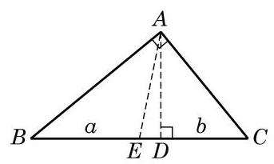
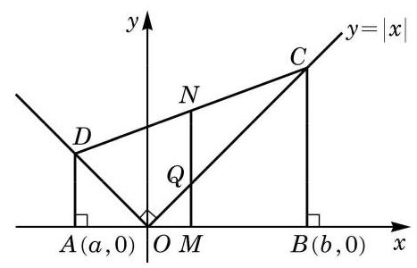

复习题A · 1
- 设一元二次方程 的两个实根为 ,求下列各式的值:
(1) ； (2) .
答案与解析收起 / 展开
- (1) . (2) .
教师整合版 / 沪教版高中数学
必修第一册
第2章等式与不等式 · 保留教材主线与原题
教材与正式教参整合
船速一定的汽船, 在静水中和有流速的河中往返航行同样的距离, 所需的时间是否一样？有人认为二者所需的时间是一样的, 他们的理由是: 当河水有流速时, 汽船逆流上行虽然速度要减慢，但回来时顺流下行的速度要加快，二者互相补偿，航行时间就应和在静水中往返一次所需的时间一样.
上面的说法貌似有理，但事实却并非如此. 为说明这一点，只需做一下简单的计算就可以了. 设汽船在静水中航行的速度为 ,河水的流速为 ,汽船在河流中航行的单程距离为 . 那么汽船逆流上行的实际速度是 ,而顺流下行的实际速度是 . 这样汽船往返一次所需的总时间是
它总是大于汽船在静水中往返一次的时间 ,且河水流速愈大,二者的差距愈大.
由上式, 我们可以看到, 汽船在有流速的河中行驶的平均速度是
正是汽船在静水中航行的速度. 注意到
就说明调和平均值总小于等于算术平均值.
事实上,对此有一个一般性的结论: 对任意给定的两个正数 ,已知 为其算术平均值,并定义 为其调和平均值 (harmonic mean),就有
且等号当且仅当 时成立,即调和平均值必小于等于算术平均值.
历史上著名的迈克耳孙-莫雷实验(1887 年)正是利用上述原理而设计的. 过去人们认为光既然是一种波, 而波的传播是需要媒介的, 如声波的传播需要空气做媒介, 水波的传播需要水做媒介等，因此光的传播也需要有媒介．但光是能够在真空中传播的，因此人们想象整个宇宙空间(包括真空)中充满了一种作为光传播媒介的神秘物质——以太. 当地球以 的速度绕太阳运动时,必定会有强烈的“以太风”迎面吹来. 这样,和上面的例子一样, 光线迎 “以太风”传播一定距离再反射回来所花费的时间, 和光线垂直于 “以太风” 方向传播同样的距离再反射回来所花费的时间, 就应该是不相等的. 迈克耳孙 (A. Michelson)和莫雷(E. Morley)依此原理设计了一个实验, 证明了两束光所花费的时间并无不同, 从而说明地球相对以太是静止的, 或者以太根本就不存在. 随着爱因斯坦相对论的建立, 以太学说逐渐被学界所抛弃.
1907 年, 迈克耳孙因 “发明光学干涉仪并使用其进行光谱学和基本度量学研究”, 获得了诺贝尔物理学奖。作为迈克耳孙光学干涉仪的一个最著名的应用，迈克耳孙-莫雷实验解决了当年普遍困惑物理学界的问题, 而其基本思想竟是平均值不等式这一初等数学的知识!
.
传递性 如果 ，且 ，那么 .
加法性质 如果 ,那么 .
乘法性质 如果 ,那么 .
传递性 如果 ,且 ,那么 .
加法性质 如果 ,那么 .
乘法性质 如果 ,那么 ; 如果 ,那么 .
如果 ,那么 .
如果 ,那么 .
如果 ,那么 .
如果 ,那么 ,其中 是正整数.
如果 ,其中 是正整数,那么 .
设 的两根为 ,则 .
| 有两不同实根 | 有两相同实根 | 无实根 | |
| 解集为 | 解集为 | 解集为 R | |
| 解集为 | 解集为 | 解集为 R | |
| 解集为 | 解集为 | 解集为 | |
| 解集为 | 解集为 | 解集为 |
平均值不等式 ，当且仅当 时等号成立.
常用不等式 ，当且仅当 时等号成立.
三角不等式 ，当且仅当 时等号成立.
(1) ； (2) .
(1) ； (2) ；
(3) ； (4) ；
(5) ； (6) .
(1) ； (2) .
(1) ； (2) .
(1)
(2)
(3)
(1) ； (2) .
(1)求斜边上的高 与中线 的长;
(2)用不等式表示斜边上的高 与中线 长度的大小关系.

(第 12 题)
(1)求中点 的坐标，以及线段 、 的长度；
(2)用不等式表示 、 长度的大小关系.

(第 13 题)
(1) ； (2) .
(1)求证: ，并指出等号成立的条件；
(2)求证:如果 ，那么 .
(1) ； (2) .
一般地,对 ,且 ,试分别求不等式
的解集. (提示: 相互之间可能相等,需要分情况讨论)
不等式 的解集为 .
更为一般地,首先求解不等式 ,需按如下情形讨论:
(1) 时,解集为 ；
(2) 时,原不等式化为 ,解集为 ;
(3) ,原不等式化为 ,解集为 ；
(4) 时,原不等式化为 ,解集为 .
其次,求解不等式 ,需分如下情形讨论:
(1) 时,解集为 ；
(2) 时,原不等式化为 ,解集为 ；
(3) 时,原不等式化为 ,解集为 ;
(4) 时,原不等式化为 ,解集为 .
提示: 本题旨在引导学生了解如何利用分段讨论表达式符号的方式来求解三次不等式, 此外, 在分类讨论时还需注意有重根的情形. 用数轴标根法直接得出不等式解集的做法, 可在第五章中再加以补充.